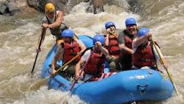

River Trips
Find the perfect adventure for your group.

Family Float
Gentle Class I–II rapids, perfect for families with children and first-time rafters.
Duration: 2–3 hours • Minimum age: 6
Classic Adventure Run
Exciting but manageable Class II–III rapids with plenty of splashes and scenery.
Duration: Half-day • Minimum age: 10
Big Drop Challenge
For experienced and confident paddlers. Strong Class III–IV sections with big waves.
Duration: Half-day or full-day • Minimum age: 14
Safety and What to Bring
All trips include licensed guides, U.S. Coast Guard–approved life jackets, helmets when required, and a safety briefing before we launch. Wear quick-drying clothing and secure sandals or shoes.
Call or use the Contact page if you aren’t sure which trip is right for your group.